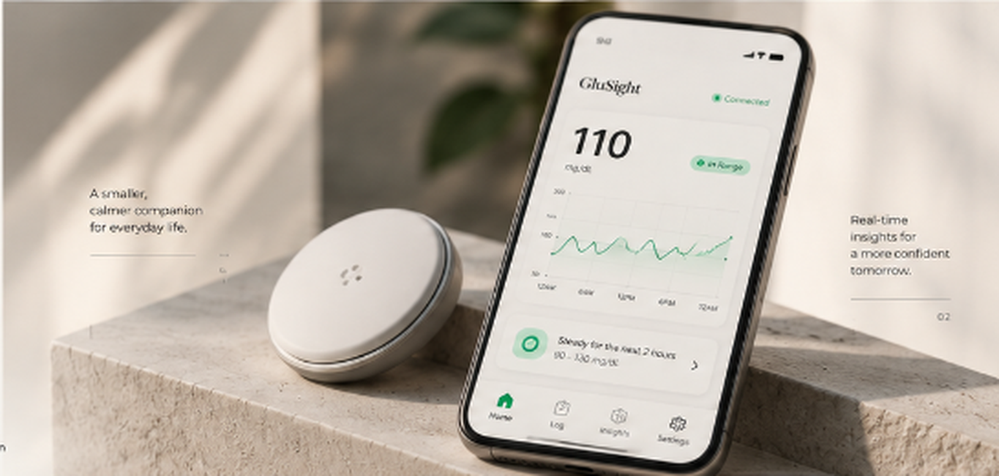
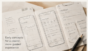
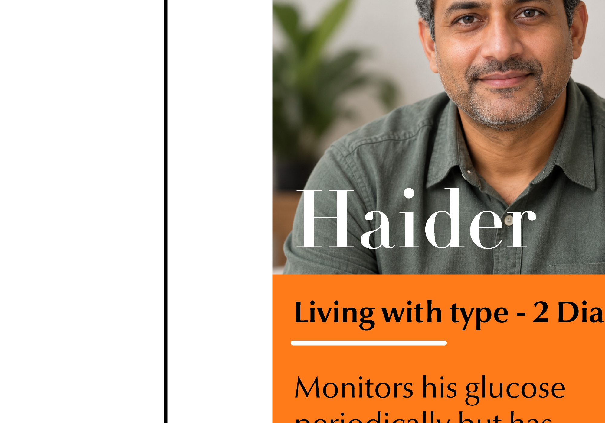
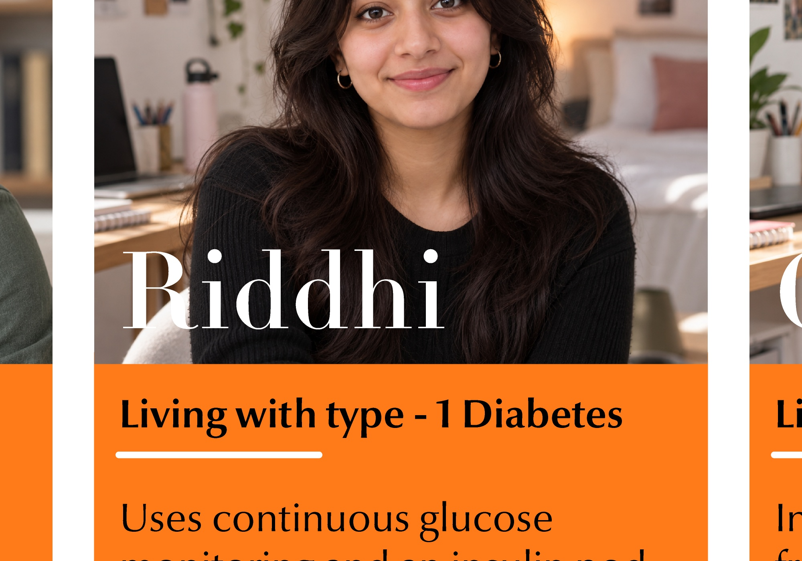
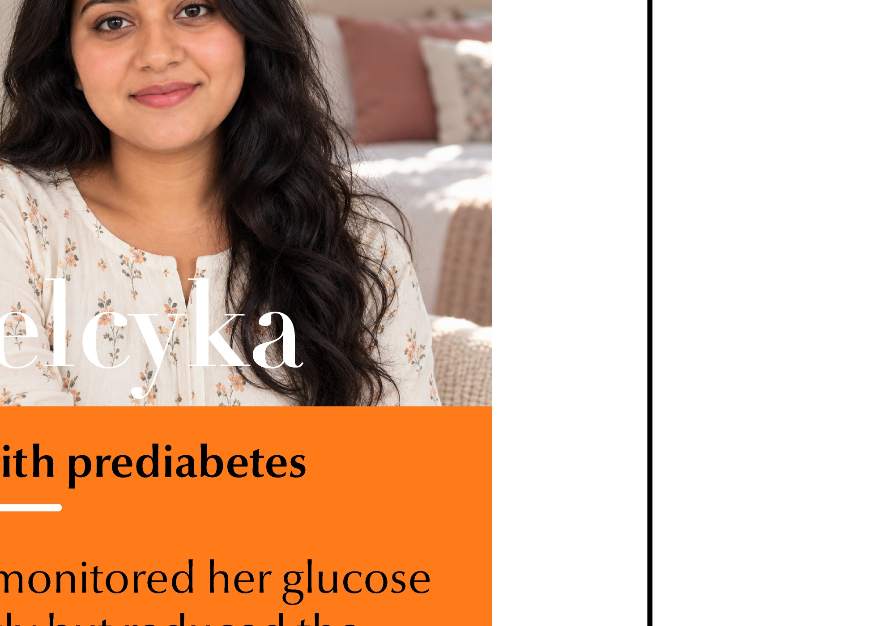

What if your glucose monitor could tell you what happens next?
Living with diabetes means more than keeping track of numbers. GluSight explores how predictive insights could help people better understand their glucose levels and prepare for what's ahead.

Introducing GluSight
GluSight is a concept exploring how predictive glucose insights could help people understand possible changes in their glucose levels and prepare for what's ahead.

GluSight integrated system: continuous sensor disc and mobile anticipation interface.
The Idea
Instead of focusing only on the current reading, GluSight explores how a possible future glucose trend could help people anticipate changes and better understand their glucose information.
Designed Around Anticipation
The concept explores how presenting current glucose information alongside a possible future trend could help users make sense of what they are seeing and consider what might happen next.
Current Glucose
Understand the present through a clear view of the current glucose reading and its trend.

Predicted Glucose Trend
Explore how glucose levels might change over the coming period through a visual projection of a possible future trend.

Communicating Uncertainty
Distinguish observed readings from estimated future values, helping users recognise that predictions are not guarantees.

Contextual Information
Explore how relevant factors, such as meals, physical activity, medication, stress, and sleep, could help users make sense of changing glucose patterns.

From Idea to Interface
GluSight began with a question about what glucose monitoring could offer beyond showing the current reading. I explored different ways to communicate possible future glucose changes before developing the interface concept.
Exploring Different Possibilities
I explored different ways to communicate potential future glucose changes, considering how the information could be presented clearly without creating unnecessary confusion.

Early sketchbook explorations: investigating how predictive glucose trajectories can be visualized.
Making the Future Easier to Understand
The focus shifted towards presenting current glucose information alongside a possible future trend, making the relationship between the present reading and what might happen next easier to understand.

Wireframe layout annotations: establishing hierarchy between immediate telemetry and forward projections.
Designing for Anticipation
The concept explores how a visual prediction, presented as an estimate rather than a certainty, could help users interpret possible glucose changes.

Interface design progression: translating predictive range concepts into balanced mobile screen telemetry.
Research & Insights
To understand the challenges surrounding glucose monitoring, I combined secondary research with conversations with people living with diabetes. The research helped me explore how people interpret glucose readings, experience uncertainty, and respond to changing levels.
Learning From Existing Research
I reviewed research on continuous glucose monitoring, glucose variability, and the challenges people face when interpreting glucose information. The findings helped establish the context for exploring how predictive insights might support a clearer understanding of glucose changes.

Physiological and lifestyle drivers of glucose variability: meals, physical exertion, medication, and sleep.
“Continuous glucose monitoring in adults with type 2 diabetes: A systematic review and meta-analysis.”
Provides systematic clinical evidence on how continuous glucose tracking supports glycemic awareness and management in everyday life.
“Effects of Continuous Glucose Monitoring on Glycemic Control in Patients With Diabetes Mellitus: A Systematic Review and Meta-analysis.”
Demonstrates the measurable impact of real-time trend awareness on time in range and glycemic variability reduction.
“Patient-Reported Usefulness and Challenges in Using Hypoglycemia-Informing Features of Continuous Glucose Monitors to Manage Hypoglycemia.”
Illuminates user experiences, behavioral trust, and the psychological challenge of acting on alert-based uncertainty.
“Glycemic variability: Importance, relationship with physical activity, and the influence of exercise.”
Highlights how contextual factors like activity and physiological exertion drive fluctuations that single point readings fail to explain.
Beyond My Own Experience
My own experience was only one perspective. To understand the broader challenges of diabetes management, I explored how others monitor their glucose, interpret changing readings, and navigate the uncertainties of everyday life.


Haider
Experienced avoidance when numbers caused distress, disengaging when readings felt unpredictable.

Riddhi
Engaged in hyper-monitoring, frequently scanning due to fear of sudden fluctuations.

Chelcyka
Experienced fatigue with constant numbers without actionable guidance on what would happen next.
What I Learned From People
Looking across the research helped me consider how people experience glucose information differently, while highlighting the importance of understanding what those readings mean and what might happen next.
Different Responses, Shared Uncertainty
People can respond to glucose management in different ways. Understanding these differences is important when exploring how glucose information could support people in their everyday lives.

Understanding What Comes Next
Knowing the current glucose reading does not necessarily resolve uncertainty about how glucose levels may change afterwards.

Information Needs Interpretation
Glucose information is most useful when people can understand what it represents and consider how to respond appropriately.

From Insight to Opportunity
The research helped frame the design opportunity: exploring how possible future glucose trends could be communicated in a way that supports understanding without presenting uncertainty as a certainty.
Looking Beyond Monitoring
GluSight explores how predictive glucose insights could extend the monitoring experience beyond current readings. Further work would focus on understanding how people interpret predicted trends, respond to uncertainty, and use these insights in everyday life.
What Comes Next?
The next stage would be to explore how people understand possible future glucose trends, how uncertainty should be communicated, and whether these insights could support meaningful decisions in everyday life.
Testing the Understanding of Predictions
Explore whether users can distinguish current glucose readings from estimated future values and correctly interpret what a predicted trend represents.
Communicating Uncertainty
Investigate how prediction ranges, visual distinctions, and supporting explanations could communicate uncertainty without making future glucose changes appear guaranteed.
Understanding Context
Explore how contextual information, such as meals, physical activity, medication, stress, and sleep, could help users interpret glucose trends without overwhelming them with information.
Evaluating the Experience
Conduct usability research to understand how people navigate the concept, interpret its visualisations, and decide what information they need to make sense of their glucose data.
Recognising the Limitations
Investigate how the concept should communicate the limitations of predictions and avoid encouraging users to treat estimates as guaranteed outcomes or substitutes for appropriate medical guidance.
Final Reflection
GluSight began with a question about what glucose monitoring could offer beyond the present reading. The concept explores how communicating possible future trends might help people make sense of their glucose information. The next step is to understand whether people can interpret these predictions clearly, trust them appropriately, and find them useful in everyday life.

Hardware companion concept: discreet, calm wearable telemetry.